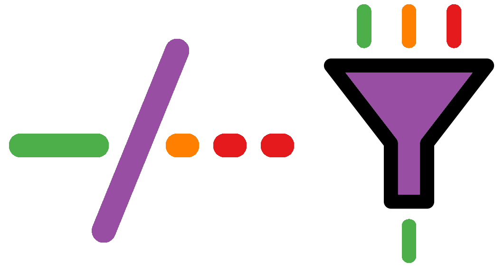

Chapter 14 Comparative analysis

While we now have a co-assembly, annotations and coverage data, they are only based on 1 million read pairs from each sample. If we want accurate functional data, we should be using the much larger, full data-set.
Fortunately, this has also been pre-prepared prior to this workshop, so you can now make a new directory which we will copy everything we need into, i.e. the functional annotation files, and the coverage files (rpkm.tsv)
cd ..
mkdir 10-FullSet
cd 10-FullSet
cp $DB/FullAnalysis2019/8-GeneAnnotations/K1K2W1.f/* ./
cp $DB/FullAnalysis2019/9-Coverage/all.rpkm.tsv ./14.1 COG categories
First, we will look again at COG categories, except this time we will see a quantitative profile of each sample. To do this, we will look up which genes belong to which COG category in our assignments.txt file, and convert gene coverage to functional coverage, by consolidating the coverage values of all genes belonging to a category.
GeneCoverageToFunctionalCoverage \
--type cogFn \
--cognizer assignments.txt \
--table all.rpkm.tsv > all.cogFn.rpkm.tsv
less all.cogFn.rpkm.tsvAs you can see, we now have an abundance value for each COG category for each gene, so we will now plot this data on a heatmap and a correlation heatmap.
Heatmap.R -i all.cogFn.rpkm.tsv \
-o cogFn.heatmap.pdf \
-t "COG Categories"
okular cogFn.heatmap.pdfPLOT
The heatmap shows that there might be a difference between the samples in terms of relative abundance of COG categories, especially between the K1,K duo and the W1 sample. We will verify this with the correlation heatmap.
CorrelationHeatmap.R -i all.cogFn.rpkm.tsv \
-o cogFn.corrHeatmap.pdf \
-t "COG Categories" --text
okular cogFn.corrHeatmap.pdf &PLOT
What does the correlation heatmap suggest?
14.2 KEGG pathways
We can generate KEGG module coverages in the same way that we just created COG category coverages.
GeneCoverageToFunctionalCoverage --type kegg \
--cognizer assignments.txt \
--table all.rpkm.tsv > all.kegg.rpkm.tsvNow that we have pathway module coverage values, we can visualise them using Cytoscape. We could use the KEGG pathway mapper as we did earlier, but Cytoscape allows for much greater customisation and more importantly, simple methods to display relative abundances of modules.
Before we run Cytoscape, we will need two things: (a) a pathway map and (b) a modified RPKM table. For now, we will use the folate biosynthesis pathway which has the ID ko00790. We can download the pathway file from the KEGG website using the following command
wget "http://rest.kegg.jp/get/ko00790/kgml" -O ko00790.xmlThe wget command allows you to download files from the internet via the command line. The URL is part of the KEGG REST API, and instructs the server to get ko00790 pathway in kgml format (a type of XML). We specify the output file name with –O. Let’s check that all worked and that the new file, ko00790.xml exists.
lsYou will now have an XML file containing this pathway, which we can import into Cytoscape.
Now we just need to add a single column to our table which will tell Cytoscape how to use the data within it. This column contains the text:
barchart: attributelist=”K1,K2,W1”
This instructs Cytoscape to generate barcharts from the rpkm data from our samples. There are many more options that can be used here (see enhancedGraphics Cytoscape options online) but we will keep it simple for demonstration purposes.
To modify our table, use the following script:
prepareTableForCytoscape.sh all.kegg.rpkm.tsv > \
all.kegg.rpkm.cyto.tsvNow we are ready to run Cytoscape.
CytoscapeIf this is the first time running Cytoscape, you will first need to install two apps. To do this, go to Apps on the menu bar and search for ‘KEGGscape,’ and install. Once this is completed, search for ‘enhancedGraphics’ and install that too. (see images below)
PLOTS
Once that’s done, go to File → Import → Network → File. Here you may need to first select your home directory (the small house button), then navigate to 10-FullSet/ko00790.xml and press ‘open.’ Press OK on the next pop-up and the map will load.
Currently, there are no annotations relating to our data on it, so let’s load the table we prepared into Cytoscape via File → Import → Table → File. Select all.kegg.rpkm.cyto.tsv and click ‘Open.’ You will be presented with a window as shown below.
PLOT
Here, be sure to set ‘Key Column for Network’ to KEGG_NODE_LABEL, so that it can match up our annotation data with the pathway map. Once done, click OK.
Finally, click the ‘Style’ tab on the left panel → Properties → Show All.
PLOT
Then, select Custom Graphics 1 from the list, and set the options as ‘Column’=‘chart’ and ‘Mapping Type’=‘Passthrough Mapping’ as shown below.
PLOT
Now, you will notice that some of the nodes on the pathway map have been annotated with bar charts. These charts show the relative abundance of that particular node in the pathway for each of the samples.
PLOT
You can navigate around by first selecting the ‘Network’ tab on the left panel and then by dragging the box on the image in the lower part of the panel. Additionally, you can zoom using the mouse-wheel. Spend some time exploring this map and other maps. e.g. the two-component system map ko02020 which can be downloaded as before. For other ideas of maps to look at, revisit section 6.3.2 and download some of the maps from the Pathway Reconstruction Results (the pathway ids are marked next to the pathway names; just prefix them with ‘ko’)